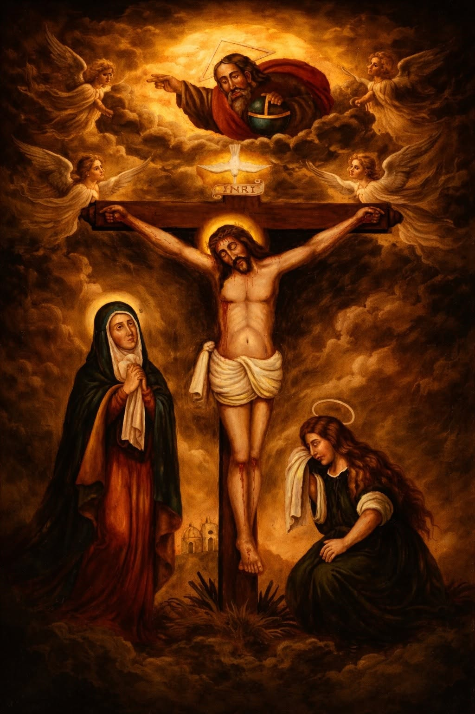
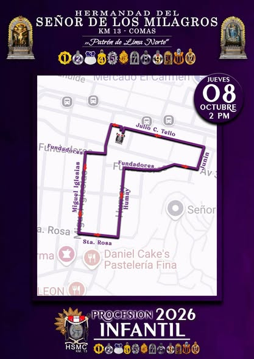
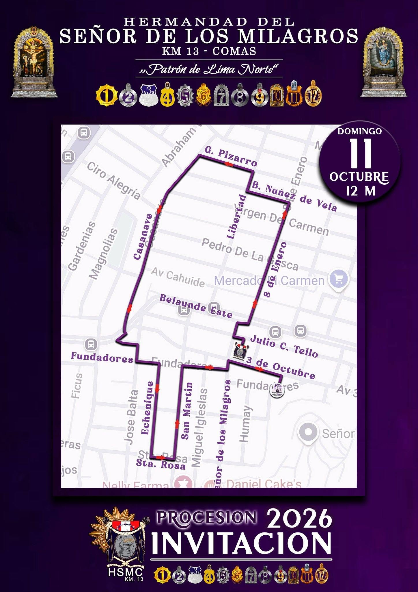
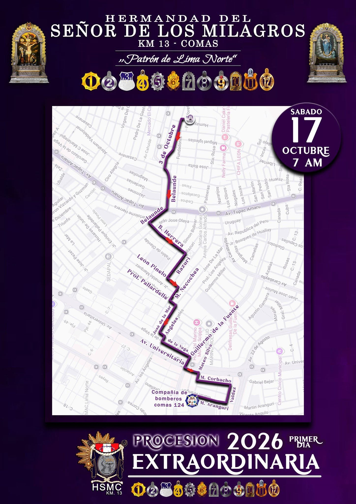
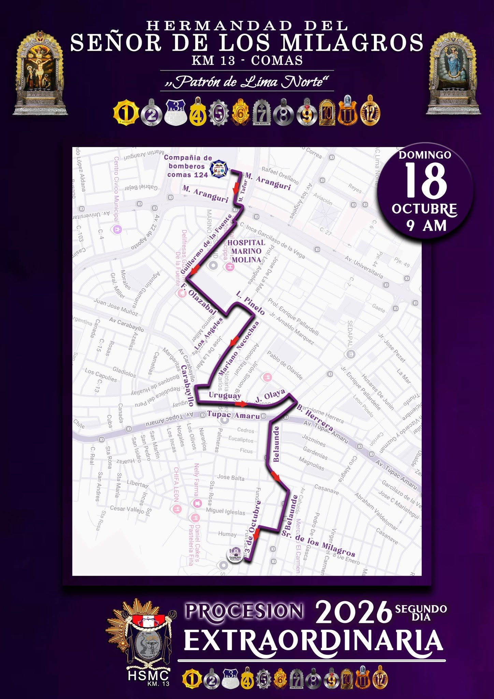
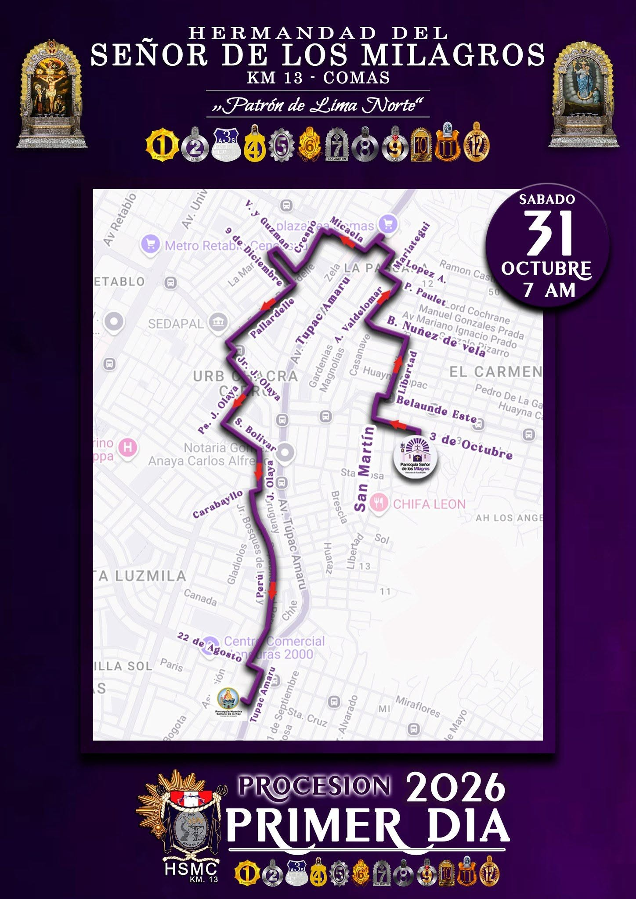
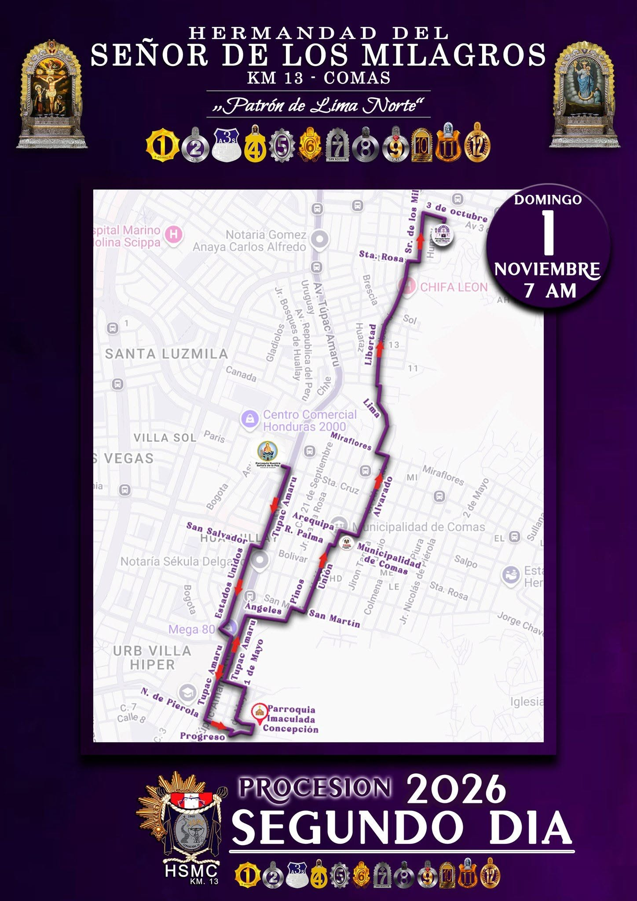
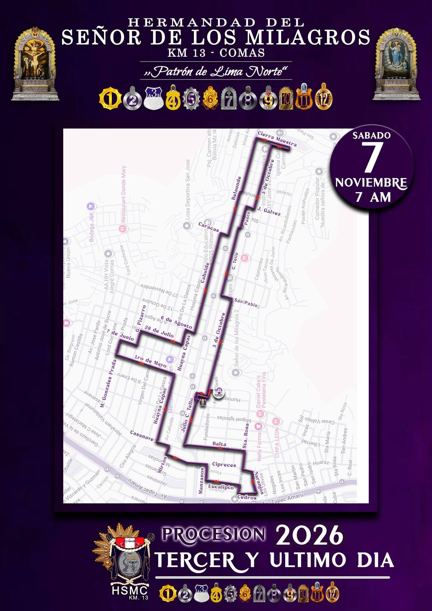

Hermandad del Señor de los MilagrosKM 13 – Comas
“Patrón de Lima Norte”
Sigue el recorrido oficial de las Sagradas Andas, consulta la programación y acompaña la Festividad 2026 desde cualquier lugar.
✦ Fe · Devoción · Encuentro al servicio de la comunidad de Comas.

LIENZO OFICIALSeñor de los Milagros de Comas
FESTIVIDAD 2026
Recorridos procesionales
Selecciona una fecha para consultar el mapa oficial. Durante la procesión, utiliza “Ubicación en vivo” para consultar la ubicación aproximada de las Sagradas Andas.

08 OCT · 2:00 PMProcesión Infantil

11 OCT · 12:00 MProcesión Invitación

17 OCT · 7:00 AMExtraordinaria · Primer día

18 OCT · 9:00 AMExtraordinaria · Segundo día

31 OCT · 7:00 AMProcesión · Primer día

01 NOV · 7:00 AMProcesión · Segundo día

07 NOV · 7:00 AMProcesión · Tercer y último día
HSMC · FESTIVIDAD 2026
Video destacado
Fe, tradición y devoción que une a nuestro pueblo.
HSMC · KM 13
Seguir las Sagradas Andas →
“Tu pueblo de Comas camina contigo”
Fe, tradición y servicio al encuentro del Señor.